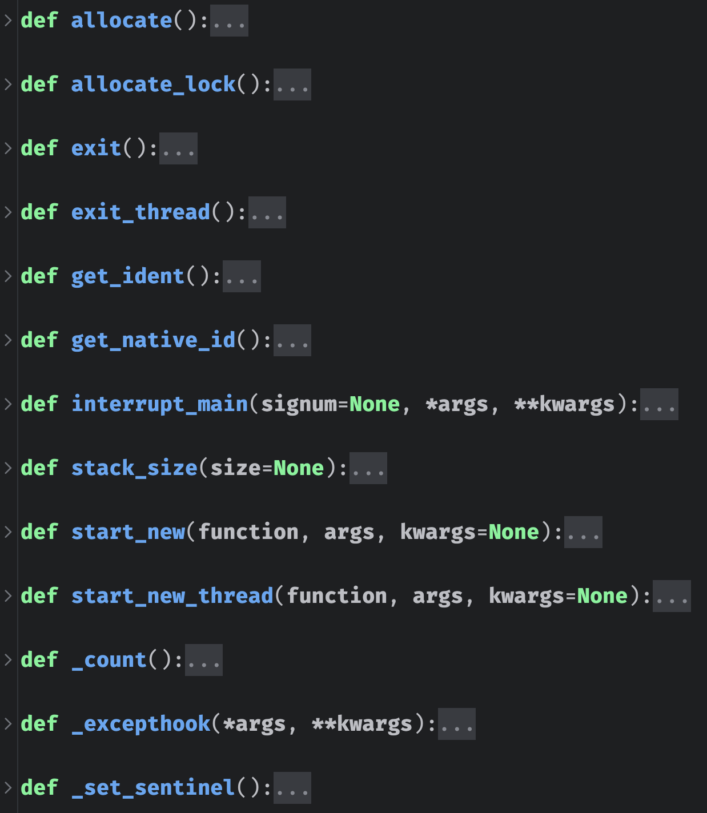
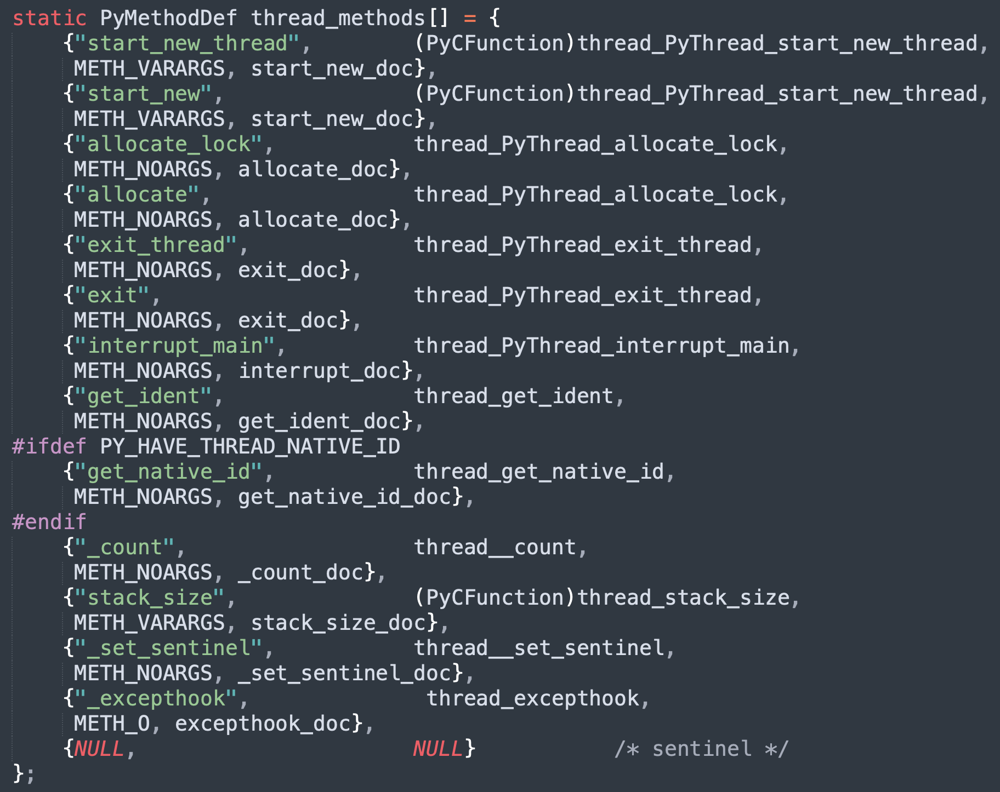
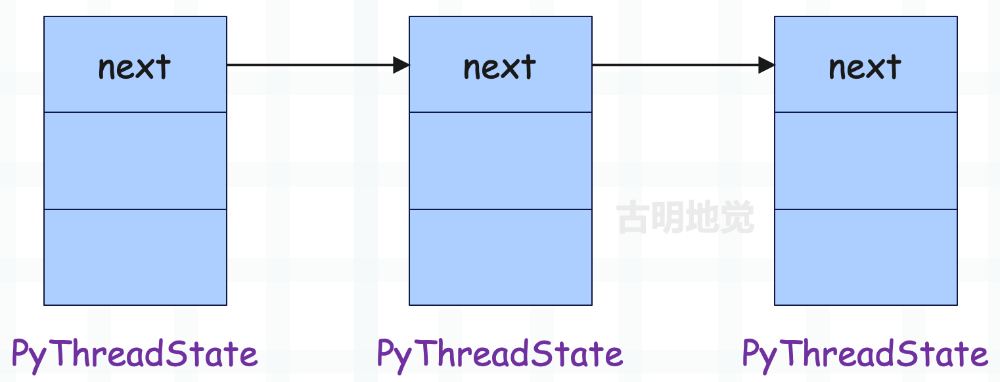
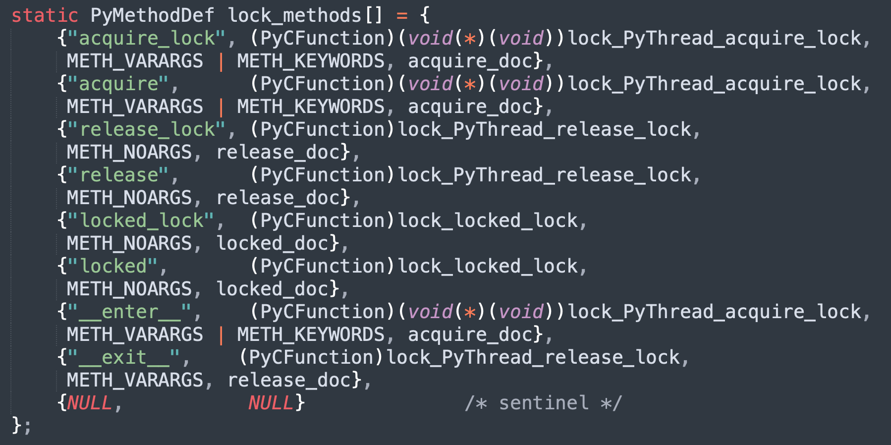

楔子
上一篇文章我们从宏观的角度了解了什么是 GIL，以及线程调度是怎么一回事，那么接下来就从源码的角度，来分析 GIL 的实现原理以及整个 Python 线程的生命周期。
初识 _thread 模块
我们在创建多线程的时候会使用 threading 这个标准库，这个库以一个 py 文件的形式存在，不过它依赖于 _thread 模块，来看一下。

_thread 是真正用来创建线程的模块，这个模块由 C 编写，内嵌在解释器里面。我们可以 import 导入，但是在 Python 安装目录里面则是看不到的。像这种底层由 C 编写、内嵌在解释器里面的模块，以及那些无法使用文本打开的 pyd 文件，PyCharm 都会给你做一个抽象，并且把注释写好。
记得之前说过 Python 源码中的 Modules 目录，这个目录里面存放了大量使用 C 编写的模块，它们在编译完 Python 之后就内嵌在解释器里面了。而这些模块都是针对那些性能要求比较高的，而要求不高的则由 Python 语言编写，存放在 Lib 目录下。
像我们平时调用 random、collections、threading，其实它们背后会调用 C 实现的 _random、_collections、_thread。再比如我们使用的 re 模块，真正用来做正则匹配的逻辑实际上位于 Modules/_sre.c 里面。
而 _thread 的底层实现是在 Modules/_threadmodule.c 中，我们来看看它都提供了哪些接口。

显然 PyCharm 抽象出来的 _thread.py，和底层的这些接口是一样的。而创建一个线程会调用 start_new_thread，在底层对应 thread_PyThread_start_new_thread。
线程的创建
当我们使用 threading 模块创建一个线程的时候，threading 会调用 _thread 模块的 start_new_thread 来创建。而它对应 thread_PyThread_start_new_thread，下面我们就来看看这个函数。
// Modules/_threadmodule.c
static PyObject *
thread_PyThread_start_new_thread(PyObject *self, PyObject *fargs)
{
PyObject *func, *args, *keyw = NULL;
struct bootstate *boot;
unsigned long ident;
// thread.Thread() 里面一般传递 target、args、kwargs
if (!PyArg_UnpackTuple(fargs, "start_new_thread", 2, 3,
&func, &args, &keyw))
return NULL;
// target 必须可调用
if (!PyCallable_Check(func)) {
PyErr_SetString(PyExc_TypeError,
"first arg must be callable");
return NULL;
}
// args 是个元组
if (!PyTuple_Check(args)) {
PyErr_SetString(PyExc_TypeError,
"2nd arg must be a tuple");
return NULL;
}
// kwargs 是个字典
if (keyw != NULL && !PyDict_Check(keyw)) {
PyErr_SetString(PyExc_TypeError,
"optional 3rd arg must be a dictionary");
return NULL;
}
// 创建 bootstate 结构体实例
/*
struct bootstate {
PyInterpreterState *interp;
PyObject *func;
PyObject *args;
PyObject *keyw;
PyThreadState *tstate;
};
*/
boot = PyMem_NEW(struct bootstate, 1);
if (boot == NULL)
return PyErr_NoMemory();
// 获取进程状态对象、函数、args、kwargs
boot->interp = _PyInterpreterState_Get();
boot->func = func;
boot->args = args;
boot->keyw = keyw;
boot->tstate = _PyThreadState_Prealloc(boot->interp);
if (boot->tstate == NULL) {
PyMem_DEL(boot);
return PyErr_NoMemory();
}
Py_INCREF(func);
Py_INCREF(args);
Py_XINCREF(keyw);
// 初始化多线程环境，记住这一步
PyEval_InitThreads();
// 创建子线程，返回 id
ident = PyThread_start_new_thread(t_bootstrap, (void*) boot);
if (ident == PYTHREAD_INVALID_THREAD_ID) {
PyErr_SetString(ThreadError, "can't start new thread");
Py_DECREF(func);
Py_DECREF(args);
Py_XDECREF(keyw);
PyThreadState_Clear(boot->tstate);
PyMem_DEL(boot);
return NULL;
}
return PyLong_FromUnsignedLong(ident);
}
在这个函数中，我们看到虚拟机通过三个主要的动作来完成线程的创建。
- 创建并初始化 struct bootstate 结构体实例 boot，在 boot 中会保存一些相关信息；
- 初始化 Python 的多线程环境；
- 以 boot 为参数，创建子线程，子线程也会对应操作系统的原生线程；
在源码中有这么一行：boot->interp = _PyInterpreterState_Get()，说明 boost 保存了 PyInterpreterState 对象，这个对象中携带了 Python 的模块对象池（module pool）等全局信息，而所有的 thread 都可以使用这些全局信息。
然后我们还看到了多线程环境的初始化动作，从这里可以看出，在开启多线程之前，支持多线程的数据结构、以及 GIL 都还没有创建。因为对多线程的支持是需要代价的，如果上来就激活了多线程，但是程序却只有一个主线程，那么 Python 仍然会执行所谓的线程调度机制，只不过调度完了还是它自己，所以这无异于在做无用功。因此 Python 将开启多线程的权利交给了程序员，自己在启动的时候是单线程，既然是单线程，自然就不存在线程调度了，当然也没有 GIL。
而一旦调用了 threading.Thread(...).start()，底层对应 _thread.start_new_thread()，则代表明确地指示虚拟机要创建新的线程。这个时候虚拟机就知道自己该创建与多线程相关的东西了，比如数据结构、环境、以及那个至关重要的 GIL。
建立多线程环境
多线程环境的建立，说的直白一点，主要就是创建 GIL。我们已经知道了 GIL 对 Python 多线程机制的重要意义，但这个 GIL 是如何实现的呢？这是一个比较有趣的问题，下面就来看看 GIL 长什么样子。
// include/internal/pycore_pystate.h
struct _ceval_runtime_state {
// 递归的最大深度，可以通过 sys.getrecursionlimit() 查看
int recursion_limit;
// 是否对线程进行追踪/调试
int tracing_possible;
// 原子整型变量，表示执行是否被中断
// 当需要中断 Python 代码执行时（比如响应信号或 GIL 请求）会设置这个标志
_Py_atomic_int eval_breaker;
// 是否被要求放弃 GIL
_Py_atomic_int gil_drop_request;
// 保存待处理的调用，比如一些信号处理函数、回调等
struct _pending_calls pending;
// 表示是否有待处理的信号，用于检测是否有外部事件（如定时器、用户中断等）需要处理
_Py_atomic_int signals_pending;
// GIL 相关，我们看到 GIL 就是一个 struct _gil_runtime_state 结构体实例
struct _gil_runtime_state gil;
};
所以 GIL 在 Python 的底层就是一个 _gil_runtime_state 结构体实例，来看看这个结构体长什么样子。
// Python/ceval_gil.h
#define DEFAULT_INTERVAL 5000
// Include/internal/pycore_gil.h
struct _gil_runtime_state {
// 一个线程拥有 GIL 的间隔，默认是 5000 微妙
// 也就是调用 sys.getswitchinterval() 得到的 0.005
unsigned long interval;
// 最后一个持有 GIL 的 PyThreadState
// 这有助于我们知道在释放 GIL 后是否还有其它线程被调度
_Py_atomic_address last_holder;
// GIL 的当前状态
// 1 表示已锁定，即 GIL 已被某个线程获取
// 0 表示未锁定，即 GIL 已被释放，可以去获取了
// -1 表示未初始化
_Py_atomic_int locked;
// 记录 GIL 发生切换的总次数，用于统计和诊断目的
unsigned long switch_number;
// cond 和 mutex 两者需要搭配使用
// 想获取 GIL 的线程在 cond 上等待，mutex 保护结构体中的共享变量
PyCOND_T cond;
PyMUTEX_T mutex;
#ifdef FORCE_SWITCHING // 在强制切换模式下使用
// 在 "GIL 等待线程" 被调度并获取 GIL 之前，会迫使 "GIL 释放线程" 一直处于等待状态
// 这样可以确保 GIL 确实转移到了其它线程，防止同一个线程反复获得 GIL
PyCOND_T switch_cond;
PyMUTEX_T switch_mutex;
#endif
};
所以我们看到 GIL 就是 _gil_runtime_state 结构体实例，而该结构体又内嵌在结构体 _ceval_runtime_state 里面。
GIL 有一个 locked 字段用于判断 GIL 有没有被获取，这个 locked 字段可以看成是一个布尔变量，其访问受到 mutex 字段保护，是否改变则取决于 cond 字段。在持有 GIL 的线程中，主循环（_PyEval_EvalFrameDefault）必须能通过另一个线程来按需释放 GIL。
而在创建多线程的时候，首先需要调用 PyEval_InitThreads 进行初始化，那么接下来就来看看它的具体逻辑。
// Python/ceval.c
void
PyEval_InitThreads(void)
{
// 获取运行时状态对象
_PyRuntimeState *runtime = &_PyRuntime;
// 拿到 ceval, 它是 struct _ceval_runtime_state 类型
// 而 GIL 对应的字段就内嵌在里面
struct _ceval_runtime_state *ceval = &runtime->ceval;
// 获取 GIL
struct _gil_runtime_state *gil = &ceval->gil;
// 如果 GIL 已经创建，那么直接返回
if (gil_created(gil)) {
return;
}
// 线程初始化
PyThread_init_thread();
// 创建 GIL
create_gil(gil);
// 获取线程状态对象
PyThreadState *tstate = _PyRuntimeState_GetThreadState(runtime);
// GIL 创建了，那么就要拿到这个 GIL
take_gil(ceval, tstate);
struct _pending_calls *pending = &ceval->pending;
// 如果拿到 GIL 了，其它线程就不能获取了，那么不好意思这个时候要加锁
pending->lock = PyThread_allocate_lock();
if (pending->lock == NULL) {
Py_FatalError("Can't initialize threads for pending calls");
}
}
关于 GIL 有四个比较重要的函数，分别如下：
- gil_created：GIL 是否已被创建；
- create_gil：创建 GIL；
- take_gil：获取创建的 GIL；
- drop_gil：释放持有的 GIL；
// Python/ceval_gil.h
// 检测 GIL 是否已创建
static int gil_created(struct _gil_runtime_state *gil)
{
return (_Py_atomic_load_explicit(&gil->locked, _Py_memory_order_acquire) >= 0);
}
// 创建 GIL
static void create_gil(struct _gil_runtime_state *gil)
{
// 初始化互斥锁和条件变量
MUTEX_INIT(gil->mutex);
#ifdef FORCE_SWITCHING
MUTEX_INIT(gil->switch_mutex);
#endif
COND_INIT(gil->cond);
#ifdef FORCE_SWITCHING
COND_INIT(gil->switch_cond);
#endif
// 初始化其它字段
_Py_atomic_store_relaxed(&gil->last_holder, 0);
_Py_ANNOTATE_RWLOCK_CREATE(&gil->locked);
_Py_atomic_store_explicit(&gil->locked, 0, _Py_memory_order_release);
}
// 获取 GIL
static void
take_gil(struct _ceval_runtime_state *ceval, PyThreadState *tstate)
{
if (tstate == NULL) {
Py_FatalError("take_gil: NULL tstate");
}
struct _gil_runtime_state *gil = &ceval->gil;
int err = errno; // 保存当前的错误码
MUTEX_LOCK(gil->mutex); // 获取互斥锁
// 判断 GIL 是否被释放，如果被释放（或者说未被锁定），那么直接跳转到_ready
if (!_Py_atomic_load_relaxed(&gil->locked)) {
goto _ready;
}
// 走到这里说明 GIL 没有被释放，还被某个线程所占有
// 那么会阻塞在这里，一直请求获取 GIL，直到 GIL 被释放，while 条件为假，结束循环
while (_Py_atomic_load_relaxed(&gil->locked)) {
int timed_out = 0;
unsigned long saved_switchnum;
saved_switchnum = gil->switch_number;
// 计算等待间隔（最小为 1 微秒）
unsigned long interval = (gil->interval >= 1 ? gil->interval : 1);
// 等待指定时间
COND_TIMED_WAIT(gil->cond, gil->mutex, interval, timed_out);
// 如果等待超时，GIL 仍然没有释放，并且没有发生切换
if (timed_out &&
_Py_atomic_load_relaxed(&gil->locked) &&
gil->switch_number == saved_switchnum)
{
// 请求当前 GIL 持有者释放 GIL，也就是将 ceval->gil_drop_request 设置为 1
SET_GIL_DROP_REQUEST(ceval);
}
}
_ready:
// ...
/* We now hold the GIL */
// GIL 一次只能被一个线程获取，因此获取到 GIL 的时候，要进行独占
// 于是会通过 _Py_atomic_store_relaxed 对其再次上锁
_Py_atomic_store_relaxed(&gil->locked, 1);
_Py_ANNOTATE_RWLOCK_ACQUIRED(&gil->locked, /*is_write=*/1);
// ...
}
// 释放 GIL
static void
drop_gil(struct _ceval_runtime_state *ceval, PyThreadState *tstate)
{
struct _gil_runtime_state *gil = &ceval->gil;
// 如果要释放 GIL，那么 GIL 此刻一定处于锁定状态，或者说未被释放
// 因为不能对已经释放的 GIL 二次释放
if (!_Py_atomic_load_relaxed(&gil->locked)) {
Py_FatalError("drop_gil: GIL is not locked");
}
// 更新最后的持有者信息
if (tstate != NULL) {
// 处理子解释器的情况：线程可能在执行时通过 PyThreadState_Swap() 发生切换
// 更新最后持有者以确保切换后正常工作
_Py_atomic_store_relaxed(&gil->last_holder, (uintptr_t)tstate);
}
// 释放 GIL
MUTEX_LOCK(gil->mutex);
_Py_ANNOTATE_RWLOCK_RELEASED(&gil->locked, /*is_write=*/1);
_Py_atomic_store_relaxed(&gil->locked, 0); // 标记 GIL 为未锁定
COND_SIGNAL(gil->cond); // 通知等待的线程
MUTEX_UNLOCK(gil->mutex);
// 强制切换处理
#ifdef FORCE_SWITCHING
if (_Py_atomic_load_relaxed(&ceval->gil_drop_request) && tstate != NULL) {
MUTEX_LOCK(gil->switch_mutex);
// 检查是否真的发生了线程切换
if (((PyThreadState*)_Py_atomic_load_relaxed(&gil->last_holder)) == tstate)
{
RESET_GIL_DROP_REQUEST(ceval);
// 等待其它线程获取 GIL
COND_WAIT(gil->switch_cond, gil->switch_mutex);
}
MUTEX_UNLOCK(gil->switch_mutex);
}
#endif
}
Python 线程在获取 GIL 的时候会调用 take_gil 函数，在里面会检查当前 GIL 是否可用。而其中的 locked 字段就是指示当前 GIL 是否可用，如果这个值为 0，则代表可用，那么获取之后就必须要将 GIL 的 locked 字段设置为 1，表示当前 GIL 已被占用。而当该线程释放 GIL 的时候，也一定要将 locked 字段设置为 0，这样才能被其它线程使用，所以官方把 GIL 的 locked 字段说成是布尔类型也不是没有道理的。
另外，由于获取到 GIL，就将 locked 字段更新为 1，并且获取 GIL 之前，也会先检测 locked 字段是否为 1。这就说明，GIL 每次只能被一个线程获取，而一旦被某个线程获取，那么其它线程会因 locked 字段为 1，而阻塞在 while 循环处。
等持有 GIL 的线程释放 GIL 之后，会通知所有在等待 GIL 的线程。但是会选择哪一个线程呢？之前说了，这个时候 Python 会直接借用操作系统的调度机制随机选择一个。
线程状态对象的保护机制
线程状态对象中都保存着当前正在执行的栈帧对象、线程 id 等信息，因为这些信息是需要被线程访问的。但是要考虑到安全问题，比如线程 A 访问线程状态对象，但是里面存储的却是线程 B 的 id，这样的话就完蛋了。
因此 Python 内部必须有一套机制，这套机制与操作系统管理进程的机制非常类似。在线程切换的时候，会保存当前线程的上下文，并且还能够进行恢复。而在 Python 内部，会维护一个变量（上一篇文章提到过），负责保存当前活动线程所对应的线程状态对象。当 Python 调度线程时，会将新的被激活线程所对应的线程状态对象赋给这个变量，总之它始终保存活动线程的状态对象。
但是这样就引入了一个问题：Python 在调度线程时，如何获得被激活线程对应的状态对象呢？其实 Python 内部会通过一个链表来管理所有的线程状态对象，当需要寻找一个线程对应的状态对象时，就会遍历这个链表。

另外对这个状态对象链表的访问，不必在 GIL 的保护下进行，因为 Python 会专门创建一个独立的锁，专职对这个链表进行保护，而且这个锁的创建是在 Python 初始化的时候就完成的。
从 GIL 到字节码
我们知道线程状态对象是通过 PyThreadState_New 函数创建的：
// Python/pystate.c
PyThreadState *
PyThreadState_New(PyInterpreterState *interp)
{
return new_threadstate(interp, 1);
}
static PyThreadState *
new_threadstate(PyInterpreterState *interp, int init)
{
_PyRuntimeState *runtime = &_PyRuntime;
// 创建线程状态对象
PyThreadState *tstate = (PyThreadState *)PyMem_RawMalloc(sizeof(PyThreadState));
if (tstate == NULL) {
return NULL;
}
// 用于获取当前线程的 frame
if (_PyThreadState_GetFrame == NULL) {
_PyThreadState_GetFrame = threadstate_getframe;
}
// 下面是线程的相关属性
tstate->interp = interp;
tstate->frame = NULL;
tstate->recursion_depth = 0;
tstate->overflowed = 0;
tstate->recursion_critical = 0;
tstate->stackcheck_counter = 0;
tstate->tracing = 0;
tstate->use_tracing = 0;
tstate->gilstate_counter = 0;
tstate->async_exc = NULL;
tstate->thread_id = PyThread_get_thread_ident();
tstate->dict = NULL;
tstate->curexc_type = NULL;
tstate->curexc_value = NULL;
tstate->curexc_traceback = NULL;
tstate->exc_state.exc_type = NULL;
tstate->exc_state.exc_value = NULL;
tstate->exc_state.exc_traceback = NULL;
tstate->exc_state.previous_item = NULL;
tstate->exc_info = &tstate->exc_state;
tstate->c_profilefunc = NULL;
tstate->c_tracefunc = NULL;
tstate->c_profileobj = NULL;
tstate->c_traceobj = NULL;
tstate->trash_delete_nesting = 0;
tstate->trash_delete_later = NULL;
tstate->on_delete = NULL;
tstate->on_delete_data = NULL;
tstate->coroutine_origin_tracking_depth = 0;
tstate->async_gen_firstiter = NULL;
tstate->async_gen_finalizer = NULL;
tstate->context = NULL;
tstate->context_ver = 1;
// 注意这个 _PyThreadState_Init
// 它便负责将线程对应的线程状态对象，放入到刚才说的那个"线程状态对象链表"中
if (init) {
_PyThreadState_Init(runtime, tstate);
}
HEAD_LOCK(runtime);
tstate->id = ++interp->tstate_next_unique_id;
tstate->prev = NULL;
tstate->next = interp->tstate_head;
if (tstate->next)
tstate->next->prev = tstate;
interp->tstate_head = tstate;
HEAD_UNLOCK(runtime);
return tstate;
}
这里有一个特别需要注意的地方，就是当前活动的 Python 线程不一定获得了 GIL。比如主线程获得了 GIL ，但是子线程还没有申请 GIL，那么操作系统也不会将其挂起。由于主线程和子线程都对应操作系统的原生线程，所以操作系统是可能在主线程和子线程之间切换的，因为操作系统级别的线程调度和 Python 级别的线程调度是不同的。
而当所有的线程都完成了初始化动作之后，操作系统的线程调度和 Python 的线程调度才会统一。那时 Python 的线程调度会迫使当前活动线程释放 GIL，而这一操作会触发操作系统内核用于管理线程调度的对象，进而触发操作系统对线程的调度。
所以我们说，Python 对线程的调度是交给操作系统的，它使用的是操作系统内核的线程调度机制，当操作系统随机选择一个 OS 线程的时候，Python 就会根据这个 OS 线程去线程状态对象链表中找到对应的线程状态对象，并赋值给那个保存当前活动线程的状态对象的变量。从而获取 GIL，执行字节码。
在执行一段时间之后，该线程会被强迫释放 GIL，然后操作系统再次调度，选择一个线程。而 Python 也会再次获取对应的线程状态对象，然后获取 GIL，执行一段时间字节码。而执行一段时间后，同样又会被被强迫释放 GIL，然后操作系统同样继续随机选择，依次往复······。
不过这里有一个问题，线程是如何得知自己被要求释放 GIL 呢？还记得 gil_drop_request 这个字段吗？线程在执行字节码之前，会检测这个字段的值是否为 1，如果为 1，那么就知道自己要释放 GIL 了。
显然，当子线程还没有获取 GIL 的时候，一切相安无事。然而一旦 PyThreadState_New 之后，多线程机制初始化完成，那么子线程就开始争夺话语权了。
// Modules/_threadmodule.c
static void
t_bootstrap(void *boot_raw)
{
struct bootstate *boot = (struct bootstate *) boot_raw;
PyThreadState *tstate;
PyObject *res;
// 获取线程状态对象
tstate = boot->tstate;
// 拿到线程id
tstate->thread_id = PyThread_get_thread_ident();
_PyThreadState_Init(&_PyRuntime, tstate);
// 很重要，一会儿说
PyEval_AcquireThread(tstate);
// 进程内部的线程数量加 1
tstate->interp->num_threads++;
// 启动子线程，执行函数
res = PyObject_Call(boot->func, boot->args, boot->keyw);
if (res == NULL) {
if (PyErr_ExceptionMatches(PyExc_SystemExit))
/* SystemExit is ignored silently */
PyErr_Clear();
else {
_PyErr_WriteUnraisableMsg("in thread started by", boot->func);
}
}
else {
Py_DECREF(res);
}
Py_DECREF(boot->func);
Py_DECREF(boot->args);
Py_XDECREF(boot->keyw);
PyMem_DEL(boot_raw);
tstate->interp->num_threads--;
PyThreadState_Clear(tstate);
PyThreadState_DeleteCurrent();
PyThread_exit_thread();
}
这里面有一个 PyEval_AcquireThread ，来看一下它长什么样子。
// Python/ceval.c
void
PyEval_AcquireThread(PyThreadState *tstate)
{
if (tstate == NULL) {
Py_FatalError("PyEval_AcquireThread: NULL new thread state");
}
_PyRuntimeState *runtime = &_PyRuntime;
struct _ceval_runtime_state *ceval = &runtime->ceval;
/* Check someone has called PyEval_InitThreads() to create the lock */
assert(gil_created(&ceval->gil));
take_gil(ceval, tstate);
exit_thread_if_finalizing(runtime, tstate);
if (_PyThreadState_Swap(&runtime->gilstate, tstate) != NULL) {
Py_FatalError("PyEval_AcquireThread: non-NULL old thread state");
}
}
可以看到在里面子线程进行了最后的冲刺，并通过 take_gil 函数争取 GIL。但由于 GIL 现在被主线程持有，所以子线程会发现自己获取不到，于是将自己挂起。而操作系统没办法靠自己的力量将其唤醒，只能等待 Python 的线程调度机制强迫主线程放弃 GIL、被子线程获取，然后触发操作系统内核的线程调度之后，子线程才会被唤醒。
然而当子线程被唤醒时，主线程却又陷入了苦苦的等待当中，同样等待着解释器强迫子线程放弃 GIL 的那一刻，假设我们这里只有一个主线程和一个子线程。
另外当子线程被线程调度机制唤醒之后，它所做的第一件事就是通过 PyThreadState_Swap 将维护当前线程状态对象的变量设置为其自身的状态对象，就如同操作系统进程的上下文环境恢复一样。这个 PyThreadState_Swap 我们就不展开说了，我们只需要知道是干什么的就行。
子线程获取了 GIL 之后，还不算成功，因为它还没有进入帧评估函数，于是子线程将回到 t_bootstrap，并进入 PyObject_Call ，从这里一路往前，最终调用帧评估函数（_PyEval_EvalFrameDefault） ，此时才算是成功。
而当进入帧评估函数的那一刻，子线程就和主线程一样，完全受 Python 线程调度机制控制了。
Python 的线程调度
当主线程和子线程都进入了帧评估函数时，Python 线程之间的切换就完全由 Python 线程调度机制掌控了，而调度机制肯定是在帧评估函数里面的。因为线程是在执行字节码的时候切换的，那么肯定是在 _PyEval_EvalFrameDefault 里面。
当然啦，之前在介绍帧评估函数的时候，其实就已经把这里的内容给说了，我们再回顾一遍。
PyObject* _Py_HOT_FUNCTION
_PyEval_EvalFrameDefault(PyFrameObject *f, int throwflag)
{
// ...
main_loop:
// 大大的 for 循环，会遍历字节码指令集，处理每一条指令
for (;;) {
// ...
// 检测是否有待处理的中断（比如信号、GIL 释放请求等）
if (_Py_atomic_load_relaxed(eval_breaker)) {
opcode = _Py_OPCODE(*next_instr);
/* 如果指令是以下之一，那么忽略中断，直接跳到 fast_next_opcode 标签进行处理
* SETUP_FINALLY：try / finally 语句的开始
* SETUP_WITH：with 语句的开始
* BEFORE_ASYNC_WITH：async with 语句的开始
* YIELD_FROM：yield from 表达式
*/
// 这种设计主要是为了确保在某些关键操作（如资源管理、异常处理、异步操作）的开始阶段不被中断信号打断
// 从而保证这些操作的正确性和可靠性，进而保证 Python 程序的稳定性和可预测性
if (opcode == SETUP_FINALLY ||
opcode == SETUP_WITH ||
opcode == BEFORE_ASYNC_WITH ||
opcode == YIELD_FROM) {
goto fast_next_opcode;
}
// 使用原子操作检查是否有待处理的信号
// 如果有待处理的信号，那么调用 handle_signals 函数处理它们
// 这个机制允许 Python 程序响应外部事件和系统信号，同时保证执行的正确性
if (_Py_atomic_load_relaxed(&ceval->signals_pending)) {
if (handle_signals(runtime) != 0) {
goto error;
}
}
// 通过原子操作检查是否有待处理的调用需要执行，calls_to_do 是一个计数器，表示待处理的调用的数量
// 如果有待处理的调用，那么执行 make_pending_calls 函数
// pending calls 主要用于垃圾回收（GC）、异步 IO 回调、定时器事件等
// 这个机制是 Python 运行时系统的重要组成部分，允许虚拟机在主循环中处理各种异步任务和周期性任务
// 确保各种后台任务能够得到及时处理，并且不需要使用额外的线程和复杂的调度机制
if (_Py_atomic_load_relaxed(&ceval->pending.calls_to_do)) {
if (make_pending_calls(runtime) != 0) {
goto error;
}
}
// 通过原子操作检查 gil_drop_request 是否为 1，即是否有释放 GIL 的请求
// 如果有，那么该线程就要释放 GIL，否则还可以继续执行字节码
if (_Py_atomic_load_relaxed(&ceval->gil_drop_request)) {
// 将当前线程状态设置为 NULL，因为要发生切换了
if (_PyThreadState_Swap(&runtime->gilstate, NULL) != tstate) {
Py_FatalError("ceval: tstate mix-up");
}
// 释放 GIL，给其它线程一个机会，不能让某一个线程一直霸占着
// 如果开启了多线程，那么当释放 GIL 的那一刻，就会被其它线程获取
drop_gil(ceval, tstate);
// GIL 释放之后，还要再次获取，但 GIL 已经被其它线程拿走了
// 所以会触发操作系统内核的线程调度机制，进入阻塞状态，等待 GIL 再度回到自己手中
// 因此不难发现，如果有 n 个线程，那么其中的 n - 1 个会陷入阻塞，等待获取 GIL
// 而一旦持有 GIL 的线程执行了 drop_gil 函数，将 GIL 释放了
// 那么这 n - 1 个线程当中就会有一个线程拿到 GIL 并解除阻塞，然后开始执行字节码
// 至于释放 GIL 的线程，则会尝试再次获取 GIL，但会因为获取不到而陷入阻塞（已经被其它线程拿走了）
take_gil(ceval, tstate);
// 检查是否需要快速退出线程（比如在解释器关闭时）
exit_thread_if_finalizing(runtime, tstate);
// 到这里说明 take_gil 返回了（即阻塞状态解除），也意味着拿到了 GIL，那么要恢复线程状态
if (_PyThreadState_Swap(&runtime->gilstate, tstate) != NULL) {
Py_FatalError("ceval: orphan tstate");
}
}
// 检测线程状态中是否存在异步的异常
if (tstate->async_exc != NULL) {
PyObject *exc = tstate->async_exc;
tstate->async_exc = NULL;
UNSIGNAL_ASYNC_EXC(ceval);
_PyErr_SetNone(tstate, exc);
Py_DECREF(exc);
goto error;
}
}
// ...
}
所以相信现在应该明白，为什么 GIL 被称为是字节码层面上的互斥锁了。因为虚拟机就是以字节码为核心一条一条执行的，也就是说字节码是虚拟机执行的基本单元，但线程在执行字节码之前要先判断 gil_drop_request 是否为 1，也就是自己还能不能继续执行字节码指令。
如果不能执行，那么该线程就调用 drop_gil 函数将 GIL 释放掉（还会将那个维护线程状态对象的变量设置为 NULL），然后调用 take_gil 再次获取 GIL，等待下一次被调度。但是当该线程调用 drop_gil 之后，早已阻塞在 take_gil 处的等待线程会有一个获取到 GIL（并且会将那个变量设置为自身对应的线程状态对象）。而等到该线程再调用 take_gil 时，GIL 已被别的线程获取，那么该线程就会成为等待线程中新的一员。
也正因为如此，Python 才无法利用多核，因为 GIL 的存在使得每次只能有一个线程去执行字节码，而字节码又是执行的基本单元。并且还可以看出，每条字节码执行的时候不会被打断，因为一旦开始了字节码的执行，那么就必须等到当前的字节码指令执行完毕、进入下一次循环时才有可能释放 GIL。所以线程切换要么发生在字节码执行之前，要么发生在字节码执行之后，不会存在字节码执行到一半时被打断。
另外，释放 GIL 并不是立刻就让活跃线程停下来，因为活跃线程此时正在执行字节码指令，而字节码在执行的过程中不允许被打断。其实释放 GIL 的本质是线程调度机制发现活跃线程的执行时间达到 0.05 秒，于是将其 gil_drop_request 设置为 1。这样等到活跃线程将当前的字节码指令执行完毕、进入下一次循环时，看到 gil_drop_request 为 1、调用 drop_gil 之后，才会真正释放 GIL（将 locked 字段设置为 0）。
就这样通过 GIL 的释放、获取，每个线程都执行一会，依次往复。于是，Python 中无法利用多核的多线程机制，就这么实现了。
最后再补充一下，当一个 Python 线程在失去 GIL 时，它对应的 OS 线程依旧是活跃线程（此时会存在一个短暂的并行时间）。然后继续申请 GIL，但是 GIL 已被其它线程持有，于是触发操作系统的线程调度机制，将线程进行休眠。所以我们发现，线程释放 GIL 之后并不是马上就被挂起的，而是在释放完之后重新申请 GIL、但发现申请不到的时候才被挂起。
而当它再次申请到 GIL 时，那么又会触发操作系统的线程调度机制，将休眠的 OS 线程唤醒。然后遍历线程状态对象链表，找到对应的线程状态对象，并交给变量进行保存。
线程调度之阻塞调度
上面的线程调度被称为标准调度，标准调度是 Python 的调度机制掌控的，每个线程都是相当公平的，它适用于 CPU 密集型。
但如果仅仅只有标准调度的话，那么可以说 Python 的多线程没有任何意义，但为什么又有很多场合适合使用多线程呢？就是因为调度方式除了标准调度之外，还存在阻塞调度。
阻塞调度是指，当某个线程遇到 IO 阻塞时，会主动释放 GIL，让其它线程执行，因为 IO 是不耗费 CPU 的。比如 time.sleep，或者从网络上请求数据等等，这些都是 IO 阻塞，那么会发生线程调度。当阻塞的线程可以执行了，比如 sleep 结束、请求的数据成功返回，那么再切换回来。除了这一种情况之外，还有一种情况，也会导致线程不得不挂起，那就是 input 函数等待用户输入，这个时候也不得不释放 GIL。
阻塞调度，是借助操作系统实现的。
子线程的销毁
创建一个子线程的时候，往往是执行一个函数，或者重写一个类继承自 threading.Thread。而当一个子线程执行结束之后，Python 肯定要把对应的子线程销毁，当然销毁主线程和销毁子线程是不同的。销毁主线程必须要销毁 Python 的运行时环境，因为销毁主线程就意味着程序执行完毕了，而子线程的销毁则不需要这些动作，因此我们只看子线程的销毁。
通过前面的分析我们知道，线程的主体框架是在 t_bootstrap 中：
// Modules/_threadmodule.c
static void
t_bootstrap(void *boot_raw)
{
// ...
// 进程内部的线程数加 1
tstate->interp->num_threads++;
// 子线程执行
res = PyObject_Call(boot->func, boot->args, boot->keyw);
if (res == NULL) {
if (PyErr_ExceptionMatches(PyExc_SystemExit))
/* SystemExit is ignored silently */
PyErr_Clear();
else {
_PyErr_WriteUnraisableMsg("in thread started by", boot->func);
}
}
else {
Py_DECREF(res);
}
// 执行完毕后要进行销毁
Py_DECREF(boot->func);
Py_DECREF(boot->args);
Py_XDECREF(boot->keyw);
// 释放内存
PyMem_DEL(boot_raw);
// 进程内部的线程数减 1
tstate->interp->num_threads--;
// 清理当前线程对应的线程状态对象
PyThreadState_Clear(tstate);
// 释放 GIL
PyThreadState_DeleteCurrent();
PyThread_exit_thread();
}
过程很简单，首先会释放内存，删除当前的线程状态对象，然后释放 GIL。不过这只是完成了绝大部分的销毁工作，而剩下的收尾工作就依赖于对应的操作系统了，当然这跟我们也就没关系了。
Python 线程的用户级互斥与同步
在 GIL 的控制之下，线程之间对 Python 提供的 C API 访问都是互斥的，并且在字节码执行的过程中不会被打断，这可以看做是 Python 内核级的互斥。但是这种互斥不是我们能够控制的，内核级通过 GIL 的互斥保护了内核共享资源，比如 del obj，它对应的指令是 DELETE_NAME，这个是不会被打断的。
但是像 n = n + 1 这种一行代码对应多条字节码，是可以被打断的，因为 GIL 是字节码层面的互斥锁，不是代码层面的互斥锁。如果在执行到一半的时候，碰巧 GIL 释放了，比如执行完 n + 1，但还没有赋值给 n，那么也会出岔子。所以我们还需要一种互斥，也就是用户级互斥。
实现用户级互斥的一种方法就是加锁，我们来看看 Python 提供的锁。

这些方法我们肯定都见过，acquire 表示上锁、release 表示解锁。假设有两个线程 A 和 B，线程 A 先执行了 lock.acquire()，然后继续执行后面的代码。
这个时候依旧会进行线程调度，等到线程 B 执行的时候，也遇到了 lock.acquire()，那么不好意思线程 B 就只能在这里等着了。没错，是轮到线程 B 执行了，但由于我们在用户级层面上又设置了一把锁，而这把锁已经被线程 A 获取了。那么即使切换到线程 B，但只要 A 还没有 lock.release()，B 也只能卡在 lock.acquire() 上面。因为 A 先拿到了锁，那么只要 A 不释放，B 就拿不到锁。
所以 GIL 是内核层面上的锁，我们使用 Python 开发时是控制不了的，把握不住，并且它提供的是以字节码为粒度的保护。而 threading.Lock 是用户层面上的锁，它提供的是以代码为粒度的保护，什么时候释放也完全由我们来控制，并且可以保护的代码数量没有限制。也就是说，在 lock.acquire() 和 lock.release() 之间写多少行代码都是可以的，而 GIL 每次只能保护一条字节码。
一句话，用户级互斥就是即便你拿到了 GIL，也无法执行。
小结
以上就是 Python 的线程，以及 GIL 的实现原理。现在是不是对 GIL 有一个清晰的认识了呢？其实 GIL 没有什么神秘的，非常简单，就是一把字节码层面上的互斥锁。
而且通过 GIL，我们也知道了为什么 Python 不能利用多核。另外这里再提一个框架叫 Dpark，是模仿 Spark 的架构设计的，但由于 Python 多线程利用不了多核，于是将多线程改成了多进程。但根据测试，Dpark 的表现还不如 Hadoop 的 MapReduce，所以 Python 的性能劣势抵消了 Spark 架构上带来的优势。
当然啦，Python 慢归慢，但是凭借着语法灵活、和 C 的完美兼容，以及丰富的第三方库，依旧走出了自己的社会主义道路，在编程语言排行榜上一直独领风骚。
欢迎大家关注我的公众号：古明地觉的编程教室。

如果觉得文章对你有所帮助，也可以请作者吃个馒头，Thanks♪(･ω･)ﾉ。